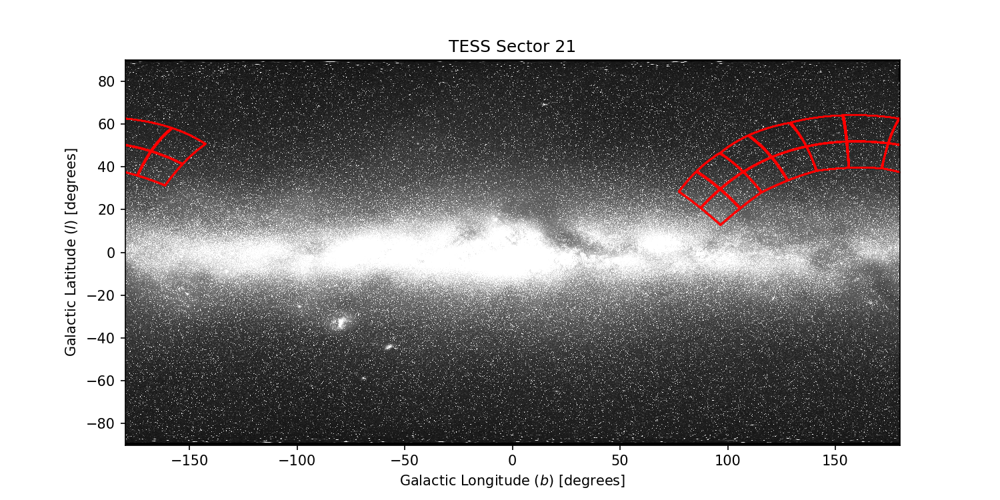
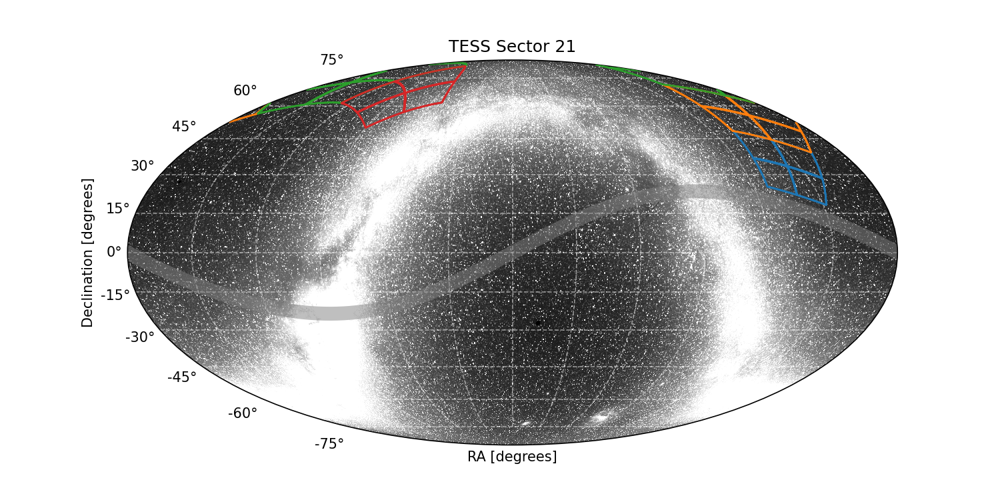

|  |  |
×
Warning for Sector 21: The FFI timestamps have been adjusted by ~0.5 seconds due to staggered readouts.
Sector 21 Information
For full data release notes see: DRN29. For a list of TIC IDs with noted issues, see this list.
Update: In Sector 21, the the FFI timestamps have been adjusted for the 0.5 second staggered readouts of the four cameras and the 0.02 second staggered readouts for individual CCDs within a camera. TSTART and TSTOP in the FFIs of previous sectors need to be adjusted for the readout offsets of each camera—see DRN 25 for additional details.
Sector Summary
Spacecraft Pointing (deg)
| RA | dec | roll | |
|---|---|---|---|
| Spacecraft | 171.8 | 65.19 | 317.95 |
| Camera 1 | 143.64 | 33.45 | 70.32 |
| Camera 2 | 157.6 | 55.4 | 60.34 |
| Camera 3 | 199.06 | 72.3 | 202.43 |
| Camera 4 | 270.0 | 66.56 | 134.95 |
Orbit Summary
| Orbits | Dates (UTC) Start - End |
Cadence # Start - End |
Momentum dumps |
|---|---|---|---|
| 49 | 2020-01-21 - 2020-02-04 | 462941 - 472707 | Every 6.25 days |
| 50 | 2020-02-05 - 2020-02-18 | 473374 - 482634 | Every 6.5 days |
Sector Notes
<div>
<table class="table table-striped table-hover" style="max-width:90em;">
<col style="width:20%">
<col style="width:60%">
<thread>
<tr>
<td style="vertical-align: middle;"><b>Noted Issue</b></td>
<td style="vertical-align: middle;"><b>Description</b></td>
</tr>
</thread>
<tr>
<td>Instrument reset</td>
<td>
Occurred in orbit 50, no data collected for 2 min between TJD 1892.50598 and 1892.50875.
</td>
</tr>
<tr>
<td>Spacecraft pointing</td>
<td>
Camera 1 and Camera 4 were both used for guiding in orbit 49; Camera 4 alone was used for guiding in orbit 50.
</td>
</tr>
<tr>
<td>Scattered light</td>
<td>
In Sector 21, the Moon passes through the field of view of Camera 1 at the start of orbit 50, saturating the detectors. A strong glint also appears in Camera 2 during this time.
</td>
</tr>
</table>